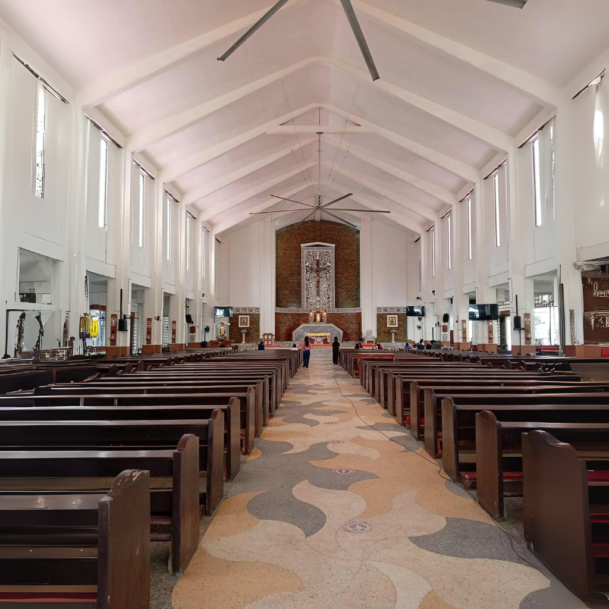

Events & Festivals
Pagadian and nearby towns host various events throughout the year including religious feasts, civic celebrations, and community festivals. Events often include parades, traditional dances, musical performances, and local food fairs. They offer a window into local culture and a chance to enjoy regional specialties.
Notable Occasions
- City foundation celebrations and civic events
- Religious observances and fiesta celebrations in barangays
- Market festivals and food fairs